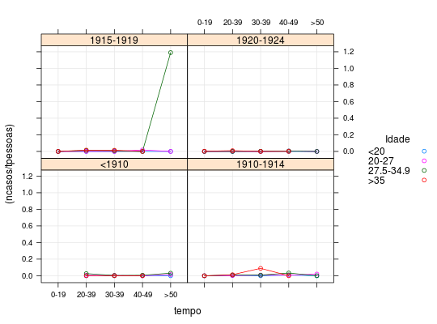
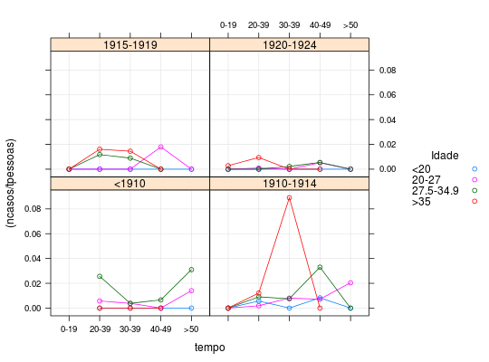

Dados provenientes de um estudo de seguimento em que se acompanhou trabalhadores de uma refinaria de níquel no País de Gales durante determinado período e avaliou-se o número de ocorrências de câncer nasal. O interesse do estudo é avaliar a associação entre a taxa anual de câncer nasal e as variáveis explicativas: idade no primeiro emprego, ano do primeiro emprego e tempo decorrido desde o primeiro emprego.
Um data.frame com 72 observações e 5 variáveis.
idade<20, 20-27, 27.5-34.9 e >35.ano<1910, 1910-1914,
1915-1919 e 1920-1924).tempo0-19, 20-39, 30-39, 40-49 e
>50.ncasostpessoasPAULA (2004), Exercício 4.6.6, pág. 343.
Breslow, N. E., Day, N. E. (1987). Statistical Methods in Cancer Research (vol. II). IARC Scientific Publications, International Agency for Research on Cancer, Lyon.
data(PaulaEx4.6.6)#> Warning: data set ‘PaulaEx4.6.6’ not foundstr(PaulaEx4.6.6)#> 'data.frame': 72 obs. of 5 variables: #> $ idade : Factor w/ 4 levels "<20","20-27",..: 1 1 1 1 1 1 1 2 2 2 ... #> $ ano : Factor w/ 4 levels "<1910","1910-1914",..: 1 1 2 3 3 4 4 1 2 2 ... #> $ tempo : Factor w/ 5 levels "0-19","20-39",..: 2 5 3 1 4 2 5 4 2 5 ... #> $ ncasos : int 0 0 0 0 0 0 0 0 1 2 ... #> $ tpessoas: num 19.4 33.2 179.5 71.4 210.8 ...# Número de observações em cada combinação das variáveis explicativas # Para modelagem não será possível a estimação de algumas interações ftable(PaulaEx4.6.6[, c("idade", "ano", "tempo")])#> tempo 0-19 20-39 30-39 40-49 >50 #> idade ano #> <20 <1910 0 1 1 1 1 #> 1910-1914 1 1 1 1 1 #> 1915-1919 1 1 1 1 1 #> 1920-1924 1 1 1 1 1 #> 20-27 <1910 0 1 1 1 1 #> 1910-1914 1 1 1 1 1 #> 1915-1919 1 1 1 1 1 #> 1920-1924 1 1 1 1 1 #> 27.5-34.9 <1910 0 1 1 1 1 #> 1910-1914 1 1 1 1 1 #> 1915-1919 1 1 1 1 1 #> 1920-1924 1 1 1 1 1 #> >35 <1910 0 1 1 1 0 #> 1910-1914 1 1 1 1 0 #> 1915-1919 1 1 1 1 0 #> 1920-1924 1 1 1 1 0# Casos de câncer seccionados pelas variáveis explicativas ftable(xtabs(ncasos ~ idade + ano + tempo, data = PaulaEx4.6.6))#> tempo 0-19 20-39 30-39 40-49 >50 #> idade ano #> <20 <1910 0 0 0 0 0 #> 1910-1914 0 1 0 1 0 #> 1915-1919 0 0 0 0 0 #> 1920-1924 0 0 0 0 0 #> 20-27 <1910 0 1 2 0 2 #> 1910-1914 0 1 4 2 2 #> 1915-1919 0 0 0 2 0 #> 1920-1924 0 1 0 3 0 #> 27.5-34.9 <1910 0 3 1 1 1 #> 1910-1914 0 3 2 3 0 #> 1915-1919 0 2 1 0 1 #> 1920-1924 0 0 1 1 0 #> >35 <1910 0 0 0 0 0 #> 1910-1914 0 2 5 0 0 #> 1915-1919 0 2 1 0 0 #> 1920-1924 1 3 0 0 0xt <- xtabs((ncasos/tpessoas)*100 ~ ., data = PaulaEx4.6.6) ftable(xt)#> tempo 0-19 20-39 30-39 40-49 >50 #> idade ano #> <20 <1910 0.00000000 0.00000000 0.00000000 0.00000000 0.00000000 #> 1910-1914 0.00000000 0.57047018 0.00000000 0.82496680 0.00000000 #> 1915-1919 0.00000000 0.00000000 0.00000000 0.00000000 0.00000000 #> 1920-1924 0.00000000 0.00000000 0.00000000 0.00000000 0.00000000 #> 20-27 <1910 0.00000000 0.57333532 0.38331212 0.00000000 1.40565918 #> 1910-1914 0.00000000 0.18937027 0.80405081 0.71545600 2.04119124 #> 1915-1919 0.00000000 0.00000000 0.00000000 1.79306264 0.00000000 #> 1920-1924 0.00000000 0.09190568 0.00000000 0.51213854 0.00000000 #> 27.5-34.9 <1910 0.00000000 2.56544010 0.38085517 0.65893516 3.10192940 #> 1910-1914 0.00000000 0.90713919 0.75394028 3.30211005 0.00000000 #> 1915-1919 0.00000000 1.17886994 0.89316018 0.00000000 119.04761905 #> 1920-1924 0.00000000 0.00000000 0.21794184 0.54436285 0.00000000 #> >35 <1910 0.00000000 0.00000000 0.00000000 0.00000000 0.00000000 #> 1910-1914 0.00000000 1.21358487 8.90789239 0.00000000 0.00000000 #> 1915-1919 0.00000000 1.60961908 1.45177916 0.00000000 0.00000000 #> 1920-1924 0.28191249 0.94021192 0.00000000 0.00000000 0.00000000plot(xt)library(lattice) xyplot((ncasos/tpessoas) ~ tempo | ano, groups = idade, data = PaulaEx4.6.6, type = c("p", "g", "a"), auto.key = list(space = "right", cex.title = 1, title = "Idade"))# Retirando a observação que domina a escala do eixo y index <- with(PaulaEx4.6.6, which.max(ncasos/tpessoas)) xyplot((ncasos/tpessoas) ~ tempo | ano, groups = idade, data = PaulaEx4.6.6[-index, ], type = c("p", "g", "a"), auto.key = list(space = "right", cex.title = 1, title = "Idade"))